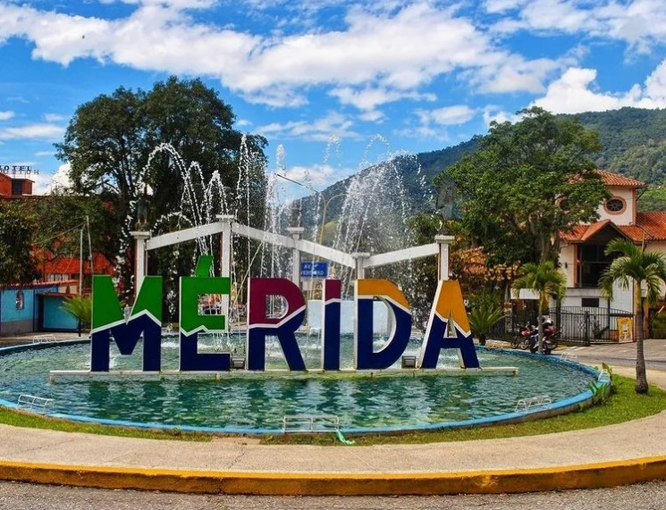
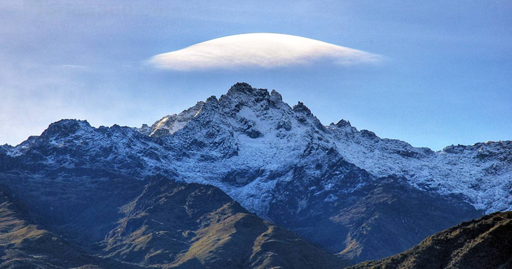
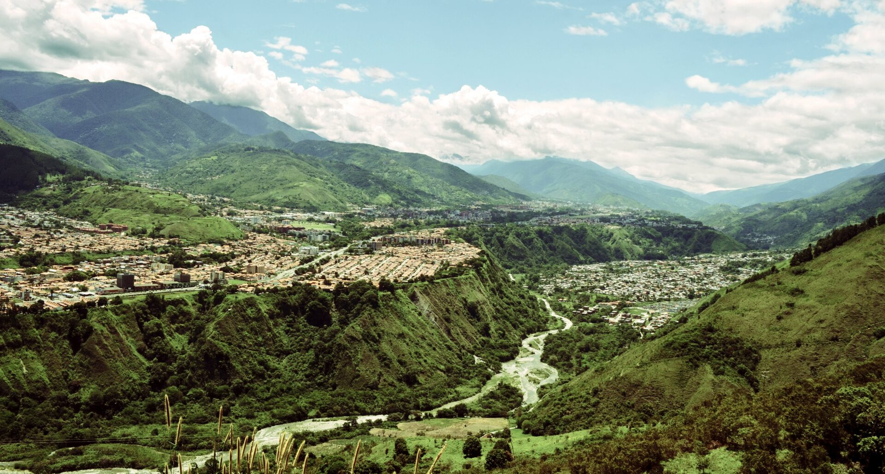
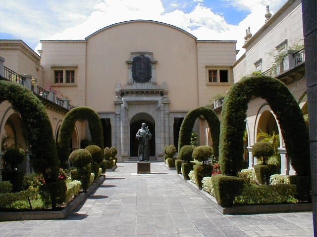
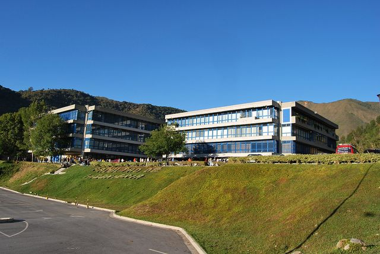
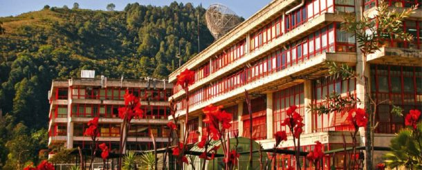
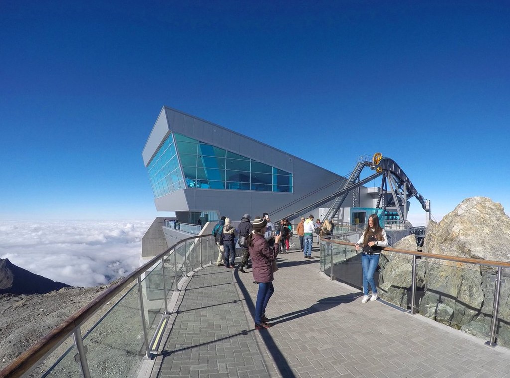
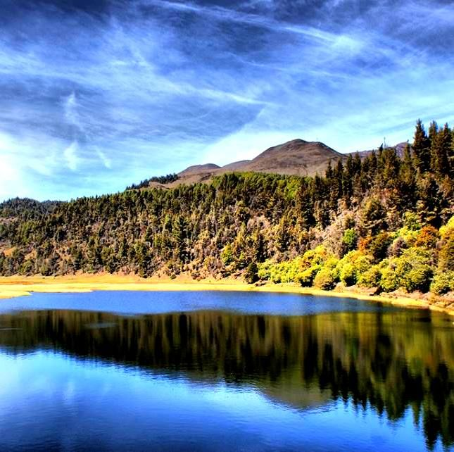

Historia
El Estado Mérida (también llamado como Estado Bolivariano de Mérida o simplementte Mérida) es uno de los veintitrés estados que, junto con el Distrito Capital y las Dependencias Federales, forman la República Bolivariana de Venezuela. Se ubica en la región de los Andes y su capital es la ciudad homónima de Mérida; limita al norte con Zulia y Trujillo, al este con Barinas y al Sur y Oeste con Táchira, su población se estima de 1.108.317 habitantes para el año 2018 según el I.N.E., y se caracteriza por una importante actividad agrícola y turística. Está asentado sobre la Cordillera de Los Andes y en su territorio se localiza una de las cumbres más altas de Los Andes, el Pico Bolívar, alcanzando los 4978 m s. n. m.. Se subdivide administrativamente en 23 municipios y 86 parroquias civiles. Sus principales ciudades son: Mérida, El Vigía, Tovar, Ejido, Lagunillas y Nueva Bolivia.
Desde los tiempos de la colonia, la agricultura fue tradicionalmente parte importante de las actividades económicas de Mérida, siendo esta el centro de distribución bienes agrícolas del Estado. Además, en los alrededores se localizaban importantes haciendas dedicadas a la producción de la caña de azúcar, cuyos ingresos impulsaron la construcción de una central azucarera donde se procesaba toda la caña de azúcar de Mérida. Esta se encuentra actualmente abandonada y convertida en museo. Con la construcción del teleférico de Mérida, la carretera trasandina y el aeropuerto de la ciudad, las actividades económicas fueron evolucionando y desplazándose desde el sector primario de la agricultura al sector terciario de servicios destacándose el sector turismo.
Geografia

La ciudad se ubica en la parte central de la cordillera andina
venezolana, en una amplia terraza del valle medio del río Chama,
entre la Sierra Nevada de Mérida por el sur-este y la Sierra La
Culata por el norte-oeste. El casco histórico de la ciudad se
ubica en la meseta de origen aluvial llamada Tatuy.
La hidrografía de la ciudad se compone de 4 ríos principales y
algunas quebradas menores en las zonas menos urbanizadas; estas
últimas solo llevan un caudal apreciable en las épocas de mayores
precipitaciones. El río más importante es el Chama, seguido por el
río Albarregas, que atraviesa la meseta y la divide en dos partes:
la Banda occidental y la Banda oriental. Estos afluentes recorren
la ciudad de extremo a extremo. Los otros dos ríos principales,
son el Mucujún y el Milla, que se unen a los antes mencionados. En
la parte baja de la ciudad, se ubica la laguna La Rosa, una de las
200 lagunas del estado Mérida.
El relieve es casi plano en la parte central de la ciudad por
ubicarse en una meseta. No obstante, presenta una inclinación
media de 3 a 7 grados, lo que determina una diferencia de altura,
entre las partes bajas y altas de la ciudad, que supera los 1.000
m siendo el punto medio de la misma los 1.610 m s. n. m. tomados a
la altura de la Plaza Bolívar, centro histórico de la ciudad. Sin
embargo, los alrededores de Mérida son accidentados, destacando
los valles formados por los ríos Chama y Albarregas, y las
cordilleras de la Sierra Nevada y la Sierra de La Culata.
El valle en donde se ubica la ciudad se formó hace aproximadamente
40 a 60 millones de años con la formación de los Andes venezolanos
y la continua erosión de los mismos por la hidrografía presente.
Sus suelos son de tipo sedimentario aluvial y arcillosos, por lo
que no se admiten edificaciones civiles superiores a 16 niveles.
Por debajo de la ciudad pasa la mayor falla tectónica activa del
occidente del país, la falla de Boconó que forma parte de la Placa
suramericana.
Universidad
La Universidad de Los Andes o ULA es una universidad pública y autónoma ubicada en los Andes venezolanos. Su sede principal y rectorado se ubican en la ciudad de Mérida. Fue fundada por el clero como casa de estudios el 29 de marzo de 1785, elevada luego a seminario y finalmente reconocida como Universidad el 21 de septiembre de 1810 bajo decreto expedido por la Junta Gubernativa de la provincia de la Corona de España.
Es una de las principales universidades de Venezuela por su antigüedad, la cantidad de estudiantes que alberga, su nivel académico y sus aportes en investigación que han contribuido al estudio y desarrollo de las ciencias. La universidad tiene como propósito fortalecer la formación integral iniciada en los ciclos de educación primaria y secundaria, además de formar equipos profesionales y técnicos necesarios para el desarrollo y progreso de Venezuela.
Turismo

El Sistema de Transporte Turístico Teleférico de Mérida o simplemente Teleférico de Mérida (también conocido como Mukumbarí) es un sistema teleférico que opera en la ciudad de Mérida, del estado Mérida, Venezuela. Es el teleférico más alto del mundo, alcanzando una altura de 4.765 m s. n. m., y el segundo más largo, con 12,5 kilómetros de trayecto, lo que lo hace una obra de ingeniería que fue tradicionalmente única en su tipo con más de 60 años de historia.
Va desde la ciudad de Mérida hasta la cima del pico Espejo, dentro del parque nacional Sierra Nevada, en los Andes venezolanos, específicamente en el estado Mérida, Venezuela. Fue cerrado en 2008 para su modernización y fue reinaugurado el 29 de abril de 2016, en etapa pre-comercial, para finalmente abrir a todo el público el 7 de octubre de 2016.
